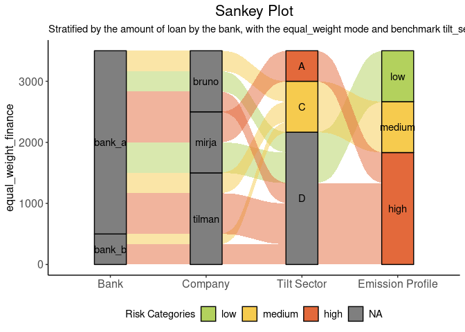
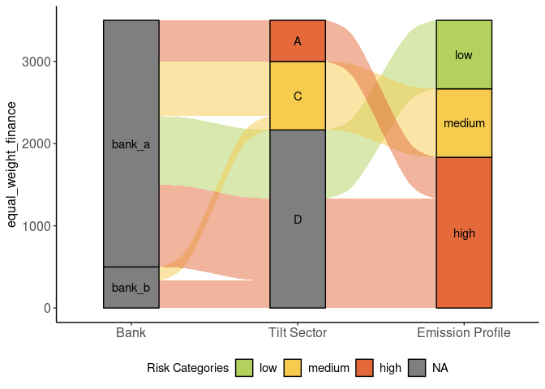
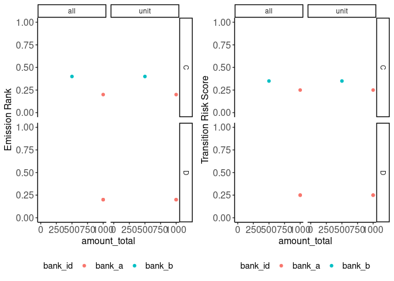

The goal of tiltPlot is to provide plots for the TILT project.
library(ggplot2)
library(dplyr)
#>
#> Attaching package: 'dplyr'
#> The following objects are masked from 'package:stats':
#>
#> filter, lag
#> The following objects are masked from 'package:base':
#>
#> intersect, setdiff, setequal, union
library(tiltPlot)1. Sankey Plot with financial data
financial
#> # A tibble: 114 × 13
#> bank_id amount_total company_name postcode wz xctr_risk_category benchmark
#> <chr> <int> <chr> <int> <chr> <chr> <chr>
#> 1 bank_b 500 peter peasa… 53773 A high all
#> 2 bank_b 500 peter peasa… 53773 A high unit
#> 3 bank_b 500 peter peasa… 53773 A medium tilt_sec
#> 4 bank_b 500 peter peasa… 53773 A medium unit_til…
#> 5 bank_b 500 peter peasa… 53773 A low isic_sec
#> 6 bank_b 500 peter peasa… 53773 A medium unit_isi…
#> 7 bank_b 500 tilman 12043 D low all
#> 8 bank_b 500 tilman 12043 D low unit
#> 9 bank_b 500 tilman 12043 D medium tilt_sec
#> 10 bank_b 500 tilman 12043 D medium unit_til…
#> # ℹ 104 more rows
#> # ℹ 6 more variables: product_name <chr>, tilt_sector <chr>,
#> # amount_of_distinct_products <int>, equal_weight_finance <dbl>,
#> # worst_case_finance <int>, best_case_finance <int>Here is the default Sankey Plot. By default the function plots with companies and uses an “equal_weight” mode.
fin <- financial
plot_sankey(fin)
You can also choose to have the plot without the company node.
plot_sankey(fin, with_company = FALSE)
Finally, the user can choose different modes to plot the Sankey plot with financial data available.
plot_sankey(fin, with_company = FALSE, mode = "best_case")
2. XCTR plots with financial data
financial
#> # A tibble: 114 × 13
#> bank_id amount_total company_name postcode wz xctr_risk_category benchmark
#> <chr> <int> <chr> <int> <chr> <chr> <chr>
#> 1 bank_b 500 peter peasa… 53773 A high all
#> 2 bank_b 500 peter peasa… 53773 A high unit
#> 3 bank_b 500 peter peasa… 53773 A medium tilt_sec
#> 4 bank_b 500 peter peasa… 53773 A medium unit_til…
#> 5 bank_b 500 peter peasa… 53773 A low isic_sec
#> 6 bank_b 500 peter peasa… 53773 A medium unit_isi…
#> 7 bank_b 500 tilman 12043 D low all
#> 8 bank_b 500 tilman 12043 D low unit
#> 9 bank_b 500 tilman 12043 D medium tilt_sec
#> 10 bank_b 500 tilman 12043 D medium unit_til…
#> # ℹ 104 more rows
#> # ℹ 6 more variables: product_name <chr>, tilt_sector <chr>,
#> # amount_of_distinct_products <int>, equal_weight_finance <dbl>,
#> # worst_case_finance <int>, best_case_finance <int>On a company level:
fin <- financial
plot_xctr_financial(fin, "peter", mode = "worst_case") +
labs(title = "Risk distribution of all products on a company level, on a financial weight")
On a portfolio level:
plot_xctr_financial(fin, mode = "worst_case") +
labs(title = "Risk distribution of all products on a portfolio level, on a financial weight")
3. XCTR plots without financial data
without_financial
#> # A tibble: 58 × 5
#> company_name xctr_risk_category benchmark product_name tilt_sector
#> <chr> <chr> <chr> <chr> <chr>
#> 1 peter peasant high all car D
#> 2 peter peasant high unit car D
#> 3 peter peasant medium tilt_sec car D
#> 4 peter peasant medium unit_tilt_sec car D
#> 5 peter peasant low isic_sec car D
#> 6 peter peasant low unit_isic_sec car D
#> 7 peter high all banana A
#> 8 peter high unit banana A
#> 9 peter medium tilt_sec banana A
#> 10 peter medium unit_tilt_sec banana A
#> # ℹ 48 more rowsTo plot on a company level:
no_fin <- without_financial
no_fin |>
filter(company_name == "peter") |>
plot_xctr() +
labs(title = "Risk distribution of all products on a company level")
On a portfolio level :

4. Create a German map with risk categories color gradient
map_region_risk(financial, "DE", benchmark = "unit_isic_sec") +
labs(title = "German map of high, medium and low propotion of the companies
that are found in one region.
© EuroGeographics for the administrative boundaries ")
#> Object cached at /tmp/Rtmp2M7MqW/eurostat/sf10320163035.RData
#> Reading cache file /tmp/Rtmp2M7MqW/eurostat/sf10320163035.RData
#> sf at resolution 1: 10 from year 2016 read from cache file: /tmp/Rtmp2M7MqW/eurostat/sf10320163035.RData